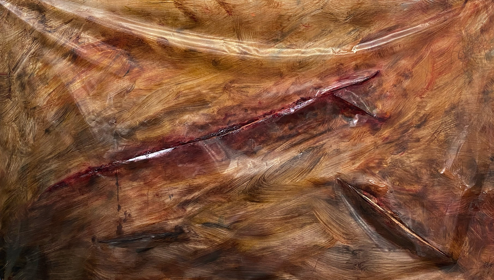

Video y sonido.
Audiovisual
azul
brillante
el Ojo el
pico anaranjado
el cuello
el cuello
el cuello
el cuello
el cuello
el cuello
el cuello herido
pájaro de papel y tinta que no vuela
que no se mueve que no canta que no respira
animal hecho de versos amarillos
de silencioso plumaje impreso
tal vez un soplo desbarata
la misteriosa palabra que sujeta
su dos patas
patas
patas
patas
patas
patas
patas
patas
patas a mi mesa
